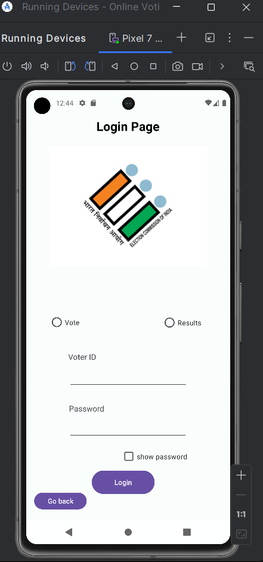
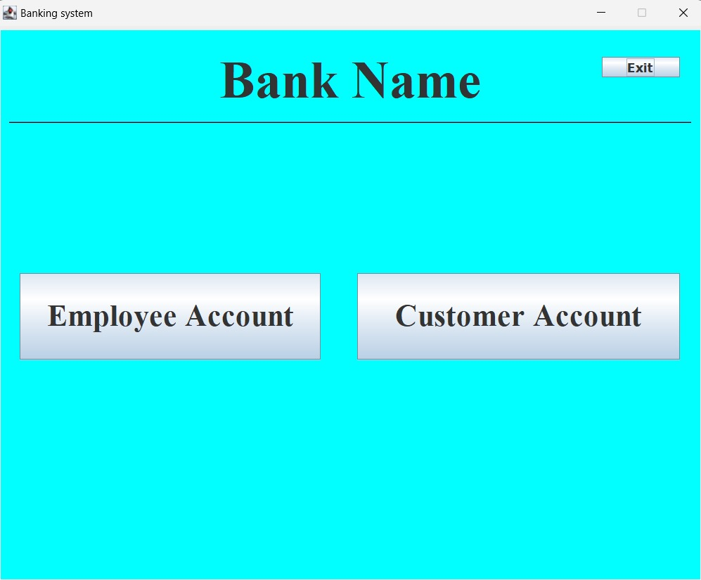
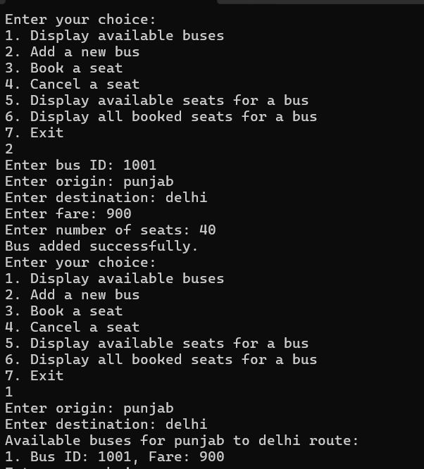

Hi there! I’m Pavan Kumar Bhojanapu, a passionate and results-driven Computer Science graduate from Lovely Professional University (LPU). My academic journey has equipped me with a solid foundation in various programming languages, including Java, C, and Python, and provided me with the skills to build both desktop and mobile applications. I am particularly skilled in Java development and Android application development, and I have hands-on experience in front-end and back-end development, making me well-versed in full-stack development basics.
During my studies, I worked on numerous projects, where I focused on solving real-world problems with clean, maintainable, and efficient code. One of my main strengths is my ability to adapt and learn quickly, and I enjoy the challenge of picking up new tools, technologies, and frameworks. Whether it’s working with Java for desktop applications, Android for mobile development, or learning new frameworks for web development, I am constantly expanding my knowledge to stay up to date with industry trends and best practices.
My passion lies in developing software that not only meets user needs but also exceeds expectations. I am driven by the idea of creating seamless, functional, and user-friendly applications that provide value. My approach to problem-solving involves breaking down complex tasks into manageable steps and collaborating with others to find the best possible solution. I thrive in environments that promote teamwork and innovation, as I believe great ideas often come from diverse perspectives.
In addition to my technical skills, I have honed my ability to communicate effectively with colleagues, clients, and stakeholders, ensuring that projects are completed successfully and efficiently. I’ve also developed an understanding of the importance of writing clean and scalable code, as well as optimizing applications for better performance.
When I’m not coding, I enjoy exploring new technologies, working on personal projects, and contributing to open-source initiatives. I am always excited about the opportunity to collaborate with others, exchange ideas, and contribute to innovative solutions that can make a difference. If you’re looking for a dedicated and adaptable developer who is always eager to learn and grow, I’d love to connect with you.
This Android-based Online Voting System offers a secure and user-friendly platform for voting, aiming to modernize traditional voting systems by eliminating manual voting methods. The app allows users to log in securely using their credentials, ensuring only authorized individuals can cast their votes. One of the key features is real-time vote casting, which allows users to select their desired candidates and submit their votes instantly. The results are visualized on the app, giving users an up-to-date view of the voting outcome as it progresses. This system supports multiple election types, making it adaptable to different voting scenarios, from government elections to organizational voting. The app integrates encryption techniques to ensure that votes are anonymous and tamper-proof, and it uses a robust database system to store user data and voting records. The back-end is powered by Firebase for real-time data synchronization and scalability. This project demonstrates a comprehensive understanding of mobile application development, security best practices, and real-time data handling. Check out the project for more technical details and explore how it can be implemented in various voting environments.
🔗 View on GitHub The Banking System is a comprehensive desktop application built using Java Swing for the graphical user interface (GUI) and MySQL for the backend database management. The system facilitates various banking operations such as account creation, money transfers, balance inquiries, and transaction histories. With a focus on simplicity and ease of use, this application offers a seamless experience for users to perform basic banking tasks. Users can create accounts, deposit and withdraw funds, transfer money between accounts, and view their account details through a secure login system. The back-end database handles customer data and transaction records, ensuring data integrity and security. This system also includes features like generating bank statements and sending alerts for successful transactions. It leverages MySQL queries to retrieve and update information, ensuring smooth data management. This project demonstrates a solid understanding of object-oriented programming principles, GUI design, database management, and transaction processing. It's an ideal solution for simulating real-world banking operations and can be further extended to include more advanced features such as loan management or financial analytics. Visit the GitHub repository for more information and the source code.
🔗 View on GitHub The Bus Ticket Generator project is an automated system built using C programming that allows users to book tickets for bus travel. This console-based application simulates a real-world bus ticketing system, providing features such as seat reservation, fare calculation, and dynamic seat allocation. Users can choose their desired bus routes, select available seats, and proceed with booking their tickets. The system calculates the fare based on the chosen seat and route, ensuring that pricing is transparent and straightforward. The backend logic ensures that once a seat is booked, it is marked as unavailable, preventing double bookings. The user interface is simple yet functional, with text-based menus guiding the user through the process. The application also includes functionality to display available seats, making it easy for users to make informed decisions. One of the key features of the project is the dynamic allocation of seats, which adjusts based on user bookings. This project highlights a deep understanding of C programming fundamentals, file handling, and data structures like arrays and structures. It provides an excellent foundation for learning about systems programming and offers a basis for future enhancements such as online ticketing or integration with external APIs. Check out the GitHub repository for the source code and further details on how this system can be improved.
🔗 View on GitHub Academor Edtech Pvt Ltd – Android Developer Intern (Aug 2024)
If you have any inquiries, project ideas, or would like to collaborate, feel free to get in touch!
Email: bhojanapupavankumar26@gmail.com
Phone: +91 6281617334
LinkedIn: linkedin.com/in/pavan018
GitHub: github.com/BhojanapuPavanKumar
🌐 Socials